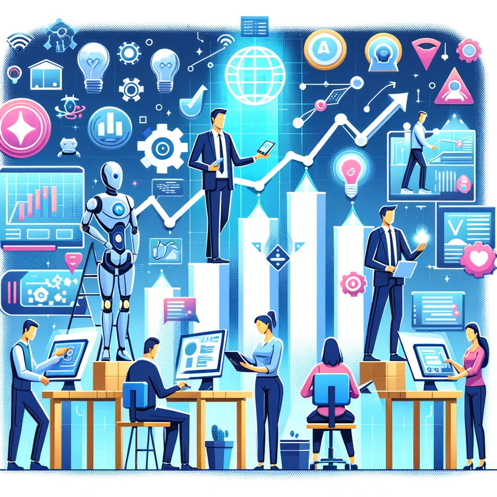

Los desafíos del marketing digital en la era moderna
En un mundo de constante evolución tecnológica, entender y aplicar estrategias de marketing digital efectivas se ha vuelto un desafío significativo.
Cómo nuestro webinar puede marcar la diferencia
Descubre cómo la inteligencia artificial está remodelando las estrategias de marketing digital, brindando herramientas innovadoras para superar los desafíos actuales.